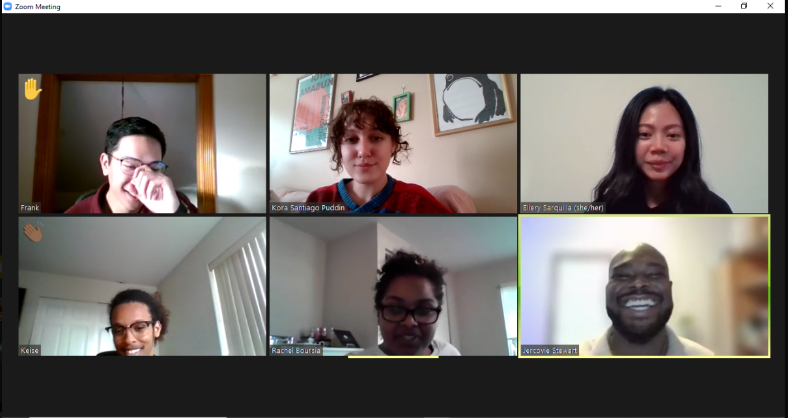

About Me
Hi I’m Ellery Sarquilla, I am currently in the Application Development Track in Year UP. I have participated in technology trade studies and innovative teams in Aerospace Industry. I am here obtain an entry-level position that will utilize my strong analytical skills and knowledge in a company where individual contribution, hard work, dedication and loyalty are valued and recognized bringing career advancement and security.
Below is a photo with my Echo Team and we are building a presentation for a school project about Self-care. Each individual worked on a topic about how to deal with stress, mediation, positive thinking and providing the class with resources. We shared with the class the importance of self-care, benefits and what self-care looks like.
